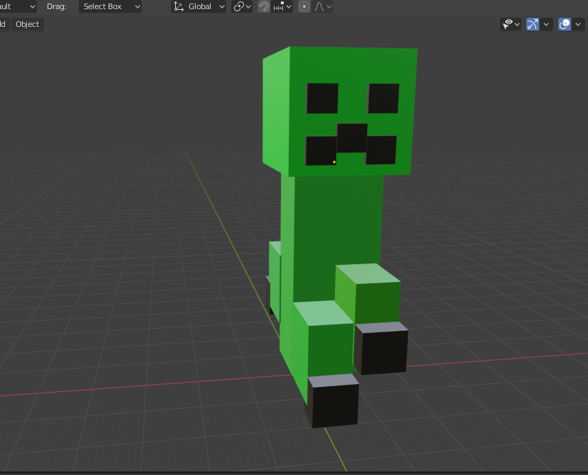

The following Renders were created by a 3D computer program called "BLENDER"(1994). I have played around with "BLENDER" for years but never completed an art piece until this year. It was such an huge achievement and is a step closer to make creative projects via "BLENDER". The coffee + computer table was created in Digital Media Art 74 while the "Creeper" model was created for a 3D printer (twice) and Adobe Aero.

